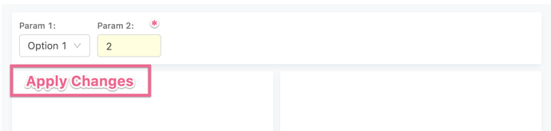

Now that applying a parameter value executes a query, the user might find themselves in situation where they want to update several parameters before running the query.
Here’s a few solutions I had in mind, and would love to hear more –
1. Use Cmd/Ctrl+Enter as “Apply All”:
If the user has several un-applied parameters, if they hit Ctrl/Cmd+Enter (or just click on Execute), it will apply all the pending parameters and run the query.
Cons: doesn’t help with dropdown or date parameters.
2. Pause Execution Button:
Add to the UI a pause button, that will pause execution when applying parameters.
Cons: might be confusing for the user?
3. Automatically pause execution if the user “touches” another parameter:
Add some delay before really running the query, and if the user “touches” another parameter, wait with the execution until they finish updating the next parameter.
Cons: the implementation might be error-prone and at times confusing for the user. For example, they might click on another parameter but with no intention to edit it.
Personally I think we should implement option #1 regardless. Not sure about the other two.
Need clarification - from a UX perspective, why would the user be concerned whether execution is immediate and automatic or not? What’s the fault in it?
This becomes relevant when you consider slow queries. From my experience queries with 2 ~ 6 min were common (not many of those with many parameters though). Considering that every query execution gets queued and there’s a limited set of workers to handle them it’s interesting to offer ways to reduce query executions for such cases.
I believe that the automatic update will improve UX for most cases, but my concern is that it may create a bad experience for the few I mentioned.
I have an insert query, where users inserting 3 parameters, before running query, at the moment they are adding 3 rows. Maybe there is a possibility to add some kind of switch in UI which you can toggle to turn on/off current or previous version of interaction with query parameters.
Or maybe if user entered more than 1 parameter and haven’t clicked ‘Apply’, button ‘Apply all’ should appear on a latest parameter or on all changed parameters or just somewhere.
Currently I’m leaning towards the toggle idea (I guess it’s option #2). I did think of its value being defined based on each Query, but that would certainly make it confusing. I’m thinking of sth similar to the Autocomplete toggle, but in this case it could be much more informative: - when it’s enabled, it should be clear that the query will execute after the parameter update; - when it’s disabled, it should be clear what needs to be done to trigger execution.
Interesting idea @ranbena, the Notification creates an interesting “fixed object” in the DOM. It’s nice that it’s very informative and it’s easy to see what you need to do.
My only concern is that it may be a bit annoying, so sth collapsible with the same idea (just holding less information when collapsed) could be interesting. I just have no idea what could fit this .
In any case, it looks great and the annoying thing is not that of an issue to me. So, in this case within a Dashboard, widget and Dashboard parameters would share the same Apply-space, right?
I share that concern. We gotta experience it in order to know. I have a feeling though it would be easy to get used to and also would serve us well in the future as the UI is unrestricted.
sth collapsible with the same idea
I’m working on an inline version. It has its downsides.
in this case within a Dashboard, widget and Dashboard parameters would share the same Apply-space, right?
I was thinking that Dashboard parameters and each widget would have a different notification key, therefore notifications would stack up according to changes. I’ll update the demo to demonstrate it.
This is very interesting and novel, but doesn’t feel right. The thing that bothers me the most is the distance (on screen) between the parameters and this notification. Also, it gets complicated when you edit some widget parameters while also editing dashboard parameters – will we show two notifications?
This is a very good point, but it’s not important. While there might be a case where a widget has both dashboard-level and widget-level parameters and one might want to execute them all together, I feel that it’s very rare.
No, it will hover over the content below the parameters – like in my ugly illustration from before:

Because it’s a temporary element, there is no harm with it blocking other content.
Feels like it clutters the UI a bit and I’m not sure how necessary it is. Regardless, would keep it for another iteration and focus on the current issue.
 .
.
{kind=link}
{kind=link}
{kind=link}
{kind=link}
{kind=link}
{kind=link}
{kind=link}